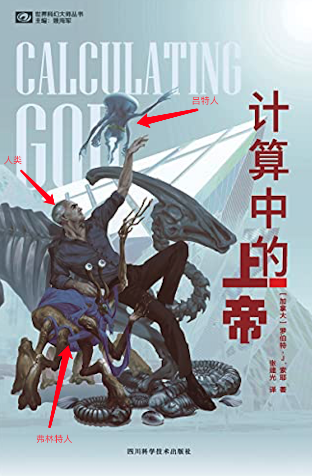

计算中的上帝 总结
摘抄
进化之所以会这样是因为上帝希望如此。
我们生活在一个被创造出来的宇宙之中。
"现代科学的主要任务，"他继续道，“是要发现为什么上帝会做这些事，以及他在工作时使用了何种方法。”
所有的外星人似乎都处于同一科技水平。
他们都是基于碳元素的DNA生命形式。
它确实开始于一场大爆炸，并在此之后膨胀好几百亿年，但最终它会在大收缩中塌陷为一个原点。
在哪儿都是这样，不仅仅在地球上，因为最小的可持续燃烧的火堆的直径大约为五十厘米，为了控制火，你得比它大一点。
没人反对秩序可以从简单的法则中产生。但又是谁规定了这些法则呢？
宇宙似乎是专门为了生命的诞生而设计出来的。
最优美的理论可能也是正确的理论，这一点你我可能都会同意。我们寻找自然法则中的高雅之处。
普遍原则不应该以例外事件为基础。这个见识大大简化了我们的法律系统。
在一个智慧种族发明了无线电后，它的生命期不过只剩下几百年了，此后它不是自我毁灭，就是彻底消失了。
人类是脆弱的，我们很容易受伤，不只是身体上的，我们的精神也容易受到伤害。
但是墨水斑点仿佛朝向望远镜的镜片膨胀了，似乎被什么东西从后面打了一拳。它的中央肢由于距离变近几乎充斥了望远镜的整个视野。同时，六个附属肢也被炸得往后退却，看上去就像受到威胁的章鱼的触脚。
上帝是一个幸免于上次宇宙崩塌的实体，一个继续存在于这个宇宙中的实体。
“上帝不仅仅制造了物种大灭绝，”弗林纳人说，“当与他的意愿一致时，他也时不时地防止它们。”
它实际上有十五亿公里宽–与木星轨道直径相近。
现在，我终于了解了这个功用：连接染色体，融合不同的种族，从而汇聚出新的生命–一种能制造出新生命的潜在生物功能。
那个实体在上一轮大爆炸和大坍塌中幸免。我想，蔚布黛尔能够度过下一轮，并成为紧接着这一个宇宙的下一个宇宙的上帝。
总结
很短的一本小说。大概的剧情就是突然有一天外星人来了，他们派出了一些代表跟地球人接触。但是他们并不是希望统治地球或者与政治机构接触，而是研究地球上的DNA、物种进化等信息。
主角是一个古生物学家。与主角接触的是一个弗林纳人（Forhilnor）–霍勒斯，外形像一个大蜘蛛；飞船上还有一种外星人吕特人（Wreeds）。

霍勒斯与主角探讨了一些信息，包括：
- 霍勒斯发现了一些文明，但是只有吕特人还存活，其他的都消失了。
- 所有的外星人似乎都处于同一科技水平。
- 弗林纳人、吕特人跟地球人都在近似的时间发生过物种灭绝。
- 弗林纳人、吕特人都相信上帝的存在。
- 弗林纳人科技比地球先进一点点，有亚光速分形的能力；吕特人是一种思维方式不同的生物，他们虔诚的与上帝沟通，但是数学等科技能力不行。
在这期间，主角确诊了癌症。然后，距离地球很近的一颗恒星发生了超新星爆炸。地球被观测到的一个奇怪的物体救了–它的外形类似一个六脚的章鱼。它挡在了地球与爆炸之间，保护了地球。
最终，主角乘坐外星人的飞船飞向了这个物体，也就是书中所说的上帝。它有十五亿公里那么大，通体纯黑。在星球上的生命进化不符合上帝的预期时，它就会用一些类似陨石等外力消灭掉当时的生命，例如低端的寒武纪生命和恐龙等。而当生命符合它的要求的生命出现时，例如人类，他就会保护其免受灭绝。
而最终的猜想是，宇宙并不是永恒的，在上一次宇宙坍塌和爆炸时，这个生物活了下来，并为了下一次坍塌做准备。而它为什么这么大，是因为它是用智慧种族融合的DNA变化出来的，就像人类的癌症，可以无限分裂。人类的癌症只是为了保留这个功能的副作用。最终，三个种族贡献出了各自的DNA，创造出了新的上帝蔚布黛尔。
看完之后，觉得有些问题，比如三个种族，弗林纳人代表了科技，吕特人可以与上帝沟通，人类在这里面是干吗的？书中描述的上帝与实际上的上帝也并不是一回事，它更像一个不知道为什么存在的巨大生物。宇宙规则实际上并不是它制定的，它只是为了活着。而且它为什么需要其他种族发展到一定程度的科技与自己接触呢？从最后的章节来看，它似乎是把其他种族的DNA作为一个大的受精卵，然后自己提供一道能量激活它？而为什么需要培养下一代上帝呢？它目前还活着，莫非下一次宇宙坍塌时它必然会死，而新的上帝比如会活？
总之，这本书还是有太多没有描述出来的问题。